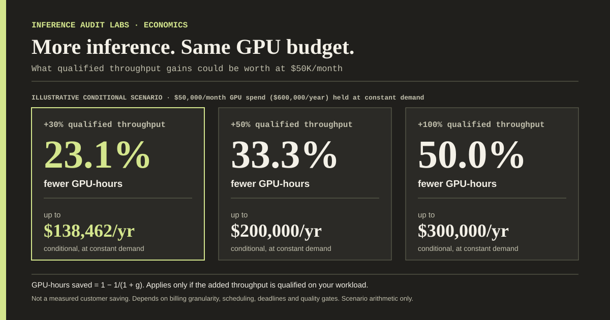

Hypothetical economic scenario
Capacity economics
Let g be the improvement in qualified throughput as a fraction. Qualified work meets the agreed correctness, latency and context requirements. A rate gain of g multiplies capacity at a fixed GPU count by 1 + g.
For fixed useful demand, conditional monthly savings equal monthly GPU spend × scalable share × (1 − 1/(1 + g)). Annual savings multiply that result by 12. With all costs scalable, gains of 30%, 50% and 100% imply up to 23.1%, 33.3% and 50% lower GPU cost for that work. Zero scalable spend yields zero savings.
At hourly price p, p / (1 + g) is the modeled cost of the amount of qualified work one baseline GPU delivered in one hour. An absolute cost per request needs measured baseline requests/hour. The comparison holds workload and unit price constant.
The optional worker scenario estimates peak demand as current GPUs multiplied by baseline peak load. It divides that demand by (1 + g) × (1 − reserve) and rounds up to a whole GPU, with at least one worker. It ignores redundancy, placement and failure domains. This floor never reduces cash spend on its own.
Billing terms, reservations, utilization, software overhead and capacity needed for failover can all change the outcome. The calculator is a scenario and makes no prediction about your measured gain or realized bill.
Conditional savings reference
Illustrative scenarios on a $50,000 monthly GPU spend. Each row assumes 100% of that spend scales down with throughput and demand stays fixed. These are not measured savings.
| Qualified throughput gain | Fewer GPU-hours | Conditional savings per year |
|---|---|---|
| +30% | 23.1% | $138,462 |
| +50% | 33.3% | $200,000 |
| +100% | 50.0% | $300,000 |
| +200% | 66.7% | $400,000 |
| +400% | 80.0% | $480,000 |
Annual figures equal $50,000 × 12 × (1 − 1/(1 + g)). If only part of the spend can shrink, multiply by that share.
